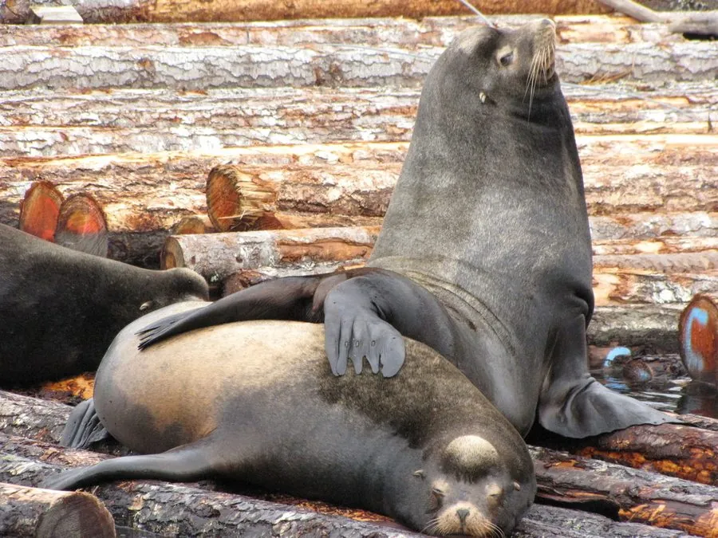

哺乳动物 · 动物界
加州海狮 Zalophus californianus

美国加利福尼亚至墨西哥沿岸常见的海狮，雄兽头顶有隆起、叫声洪亮，善于用前鳍足划水，是动物园中常见的表演动物。
- 分类
- 门脊索动物门纲哺乳纲目食肉目科海狮科属加州海狮属
- 栖息环境
- 美国加利福尼亚至墨西哥的岩岸、海岛与近岸海域
- 地理分布
- 美国加利福尼亚沿岸、墨西哥下加利福尼亚及加利福尼亚湾
- 保护级别
- IUCN 无危（LC）；非中国分布物种
物种志
加州海狮雄兽体长 2.1–2.4 米、体重 300–350 kg，雌兽体长 1.8–2.0 米、体重 90–100 kg。雄兽头顶有隆起的矢状嵴，颈部粗壮，毛色为深棕至黑色；雌兽毛色较浅。它的外耳壳小而明显，前鳍足长而有力，后鳍足可以向前折叠，能在陆地上行走。
加州海狮分布于美国加利福尼亚至墨西哥下加利福尼亚的太平洋沿岸，以及加利福尼亚湾，主要在海岛和岩岸繁殖。它以鱼、乌贼和章鱼为食，常结成大群在近岸捕食。繁殖季雄兽建立领地，雌性妊娠期约 11 个月，每胎 1 仔。加州海狮种群数量稳定，被列为无危；它们聪明易训练，常出现在动物园和水族馆的表演中。
形态与习性
- 食性鱼、乌贼与章鱼
- 体长雄 2.1–2.4 m，雌 1.8–2.0 m
- 体重雄 300–350 kg，雌 90–100 kg
- 寿命约 20–30 年
- 繁殖妊娠约 11 个月，每胎 1 仔
- 特征雄兽头顶有隆起的矢状嵴
趣味知识
- 雄兽头顶有隆起的矢状嵴，颈部比雌兽粗壮得多。
- 加州海狮的后鳍足能向前折叠，因此在陆地上行走自如。
- 它聪明易训练，是动物园和水族馆常见的表演动物。